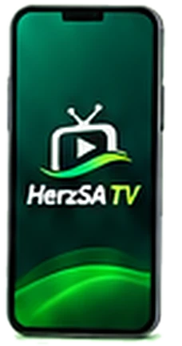

Android
Versión 1.4.5 · APK · 4.6 MB
Teléfonos, tabletas, TV Box y Android TV con Android 6 o posterior.

HerzSA TV solo puede usarse conectado a la red de HerzSA.Net o a una red aliada MultiNet (puntos de acceso MULTINET_). No funciona con datos móviles ni con Internet de otro proveedor que no pertenezca a MultiNet.
Estas versiones aún no están publicadas en las tiendas oficiales. Son los archivos originales de HerzSA.Net, sin publicidad ni programas adicionales. Descárgalos solo desde esta página.
Descarga e instala en minutos.
Versión 1.4.5 · APK · 4.6 MB
Teléfonos, tabletas, TV Box y Android TV con Android 6 o posterior.

Versión 1.2.4 · Instalador .exe · 117 MB
Computadoras con Windows 10 u 11 de 64 bits.

Versión 1.0.12 · Paquete .zip · 1 MB
Cualquier Roku, instalado en modo desarrollador.

Sigue los pasos de acuerdo a tu equipo.

En TV Box o Android TV: instala la app Downloader desde Google Play, escribe assets/descargas/HerzSA-TV-1.4.5.apk, permite instalar apps desconocidas y selecciona Instalar.
Actualizaciones: cuando hay una versión nueva, la propia app te ofrece actualizar desde el pie de pantalla o desde Mi cuenta.
El aviso de Windows aparece porque el instalador aún no tiene firma digital. Dentro del video: F11 pantalla completa, ▲ ▼ cambian de canal y Esc regresa.
Actualizaciones automáticas: al abrir el programa, si hay una versión nueva se descarga sola y te ofrece reiniciar para instalarla.
rokudev y tu contraseña.Solo cabe una app instalada así por Roku y no se actualiza sola: para una versión nueva repite los pasos 4 a 6. Si restableces el Roku de fábrica, la app se borra. ¿Prefieres que lo haga un técnico? Solicítalo a soporte.
Con los datos de tu servicio.
¿Aún no tienes usuario? El IPTV está incluido en los planes Lite y Plus, y en el Plan Básico cuesta $40 adicionales.
Ver planesHuella SHA-256 de cada archivo.
Si quieres comprobar que el archivo no fue alterado, compara su huella SHA-256 con la de esta tabla.
7d0904433a2b424b804c15063946012ae3795ddb80723c9fbb9d7203dfeafb22c32b9b4590e65beb409250bbd273f62ee2cd5b1d0ce3452efae294afa9b3a946247388c3d546bad618bb0bb7bba3dd0b5ba9e0d6d3ddfad22696ab365a7f66fdEn Windows: certutil -hashfile archivo SHA256
Sobre la instalación.
HerzSA TV es un servicio para los clientes de HerzSA.Net y solo funciona dentro de nuestra red y de las redes aliadas MultiNet. Conéctate al Wi-Fi de tu servicio o a un punto MULTINET_.
Los avisos de Android y Windows aparecen con cualquier app que no venga de su tienda oficial. Estos archivos son los originales de HerzSA.Net, sin publicidad ni programas adicionales. Descárgalos solo desde esta página y, si quieres, verifica su huella SHA-256.
La versión para Roku está en proceso de publicación en la tienda de canales. Anunciaremos aquí cuando cada versión esté disponible en su tienda.
Verifica que estés conectado a nuestra red o a una red MULTINET_ y que el usuario y la contraseña estén escritos exactamente como te los entregamos. Si continúa, consulta el soporte de HerzSA TV.
Revisa la guía de diagnóstico. Si el problema continúa, escríbenos con tu nombre, el equipo que usas (Android, Windows o Roku) y una descripción del problema. Nunca incluyas tu contraseña.
Soporte de HerzSA TV